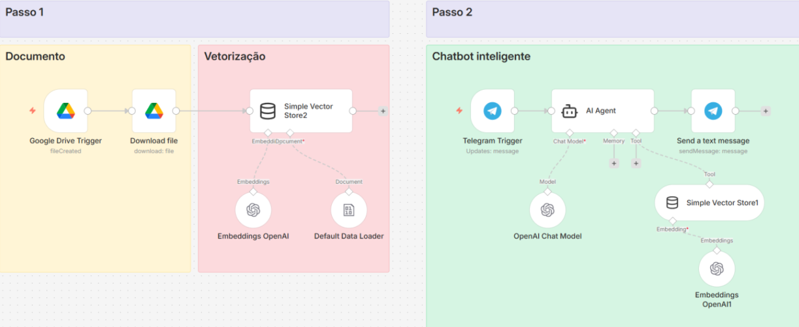

Juntei 7 anos de turismo, quase 5 de chatbots, os estudos de automação e o jeito mineiro, e isso virou o UaiBot.
Durante uma aula sobre aplicação de RAG, criei uma assistente para a UaiFly, uma agência de viagens fictícia. Em vez de seguir o exemplo do curso, criei um bot com base na realidade que vivi por anos: o dia a dia da emissão de bilhetes aéreos.
{{ b.text }}
Clique na imagem para ampliar.

Eu sei que produtos reais têm complexidades (e problemas) bem maiores que cases fictícios como esses. Mas foi aqui que entendi, na prática, como um documento vira base vetorial e como o agente consulta essa base para responder.